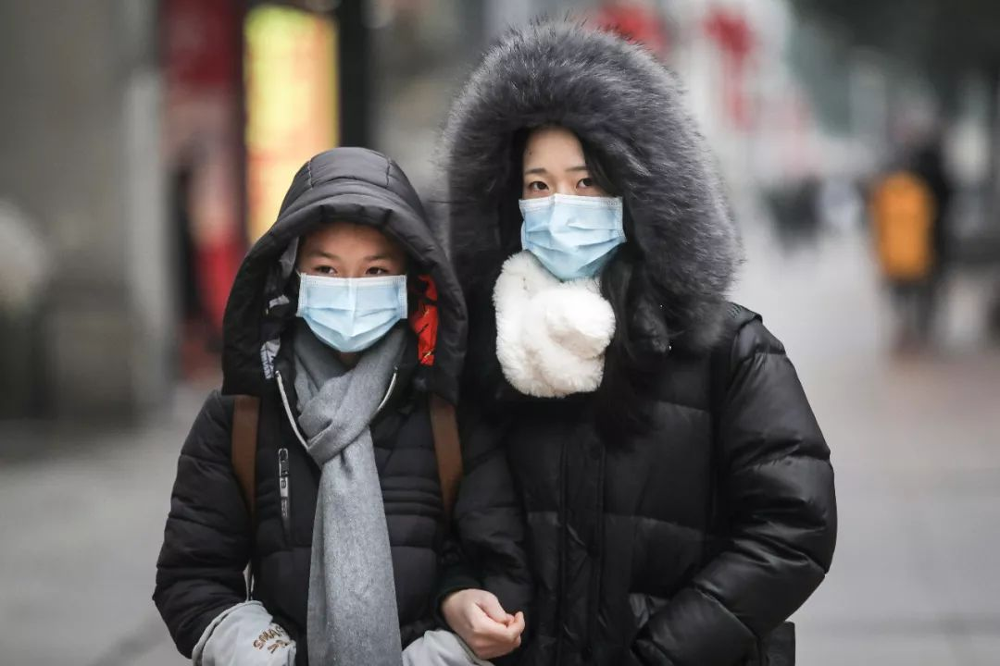
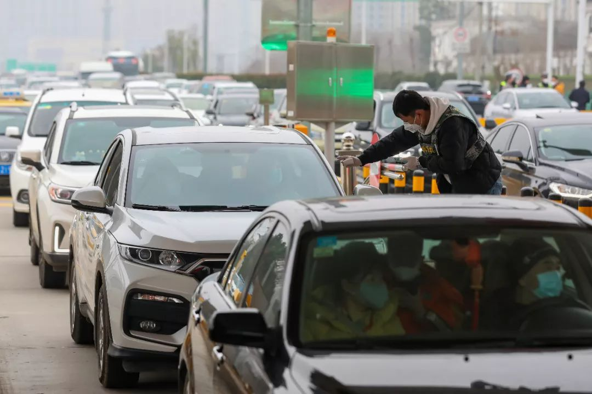
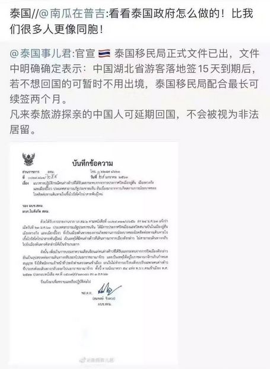
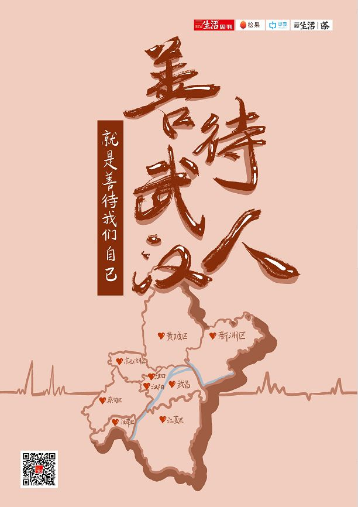

上海市医疗救治专家组组长：武汉很困难，其他输入病例的城市将面临更大挑战
原文链接 备份链接 张文宏接受本刊记者采访时，已经是今日凌晨1点。作为复旦大学附属华山医院感染病科的主任，张文宏刚刚到河南，随国家卫健委督查组考察河南的疫情防控措施的落实。华山医院感染科是全国最强的科室，作为本领域的带头人，疫情发现之后， …

这些天，我们收到很多武汉人在外省遭遇的反馈。在“武汉加油”的口号下，“武汉人”却成了被特殊对待的对象。滞留在外的他们，被驱逐、歧视甚至遭遇个人隐私的严重泄露。
这种因恐慌而起的非理性反应，让很多人似乎忘了，武汉疫情并不是武汉人的错。他们中的很多人，都是1月23号“封城”之前、甚至是1月20号疫情爆发之前离开的武汉。他们中的多数人，也都愿意配合所到之地卫生部门的隔离与检查。而现在他们面临的处境，不仅是想回家而不得，更是被排斥在了正常的社会生活之外。
不过，让人开始感到安慰的是，已经有些地方政府开始主动为武汉以及其他湖北籍游客提供集中统一的住宿场所。这也是目前最可行的解决办法。如霍布斯在《论人性》中所言，“发生在一个无辜人身上的苦难，也有可能发生在所有人身上。”善待武汉人，才是真正善待我们自己。
记者 | 王梓辉
实习记者 | 张佳婧
李青霞一家是在1月25号被物业从租住的酒店式公寓里赶出来的。在那之前，李青霞一家三口带着她的公公婆婆已经在那里住了4天。前两天都没问题，直到1月23号武汉宣布“封城”，全国人民都意识到了疫情的严重性，他们的度假之旅也就被迫结束了。

去年11月，李青霞一家人就定了要去海南三亚过年的行程。1月16日，他们一家5口人开着一辆鄂A牌照的车从武汉自驾前往海南，并于1月18日登上了海南岛。那时，家住武昌地区、自称“很少往汉口跑”的李青霞只知道华南海鲜市场出了问题，具体是什么问题她也不清楚。
1月23号当天下午，这片房产的物业找上门来对他们说，“你们是武汉人，不能住在这里。”李青霞一家当然不能接受，就找当初订房的旅行网站出面协调，暂时解决了问题。
但24、25号，物业方面仍然希望他们搬走。25号下午，李青霞他们和物业工作人员发生了激烈的言语冲突，李青霞对物业说：“我们是付了钱的，为什么要走？哪一条法律法规规定了武汉人不能住房？你要是拿法律法规出来，我马上走。”
双方叫来了警察。在李青霞家人拍摄的视频中，民警和物业希望他们一家去医疗机构做检查，证明自己没有感染冠状病毒；而李青霞他们一家一方面认为医院无法给普通人开具“没有新型冠状病毒”的证明，另一方面也无法获得民警后续“只要开具了证明就可以不被酒店赶走”的保证。
双方僵持之下，还是靠旅行网站出面协调，旅行网站的工作人员说可以帮李青霞一家再找个地方，但是要他们隐藏武汉人的身份。李青霞觉得被歧视和侮辱了，“我跟他们说，我要住就堂堂正正地住。第一我没得病，我不是感染者；第二，没有哪条法律规定武汉人不能住。”最后还是一家大型连锁酒店在保证每日体温检测的情况下接纳了他们。
但在视频中，当地民警无意中的一句话让李青霞最为愤怒，那位民警一边登记他们的身份证信息，一边随口说：“说句不好听的话，你们是偷偷跑出来的，你们应该在家隔离的。”李青霞一家听到后瞬间炸开了，李青霞甚至哭了起来，边哭边反驳：“我们不是偷跑出来的，我们1月16号就出来，23号才发的封城，那时哪个知道会发生这个情况嘛。如果我们知道有这个情况，还跑出来祸害别人干嘛？”

远征 摄
你看，这也是大多数滞留在外地的武汉人觉得自己最冤枉的地方：我们明明都是1月23号之前、甚至是1月20号疫情爆发之前离开的武汉，我们自己也不知道情况会变成这样，又不是故意要跑出来的。
数据似乎也能说明这一点。据武汉市长周先旺透露的数据，因为春节和疫情影响离开武汉的人超过500万。而百度地图慧眼的迁徙大数据显示，1月10日至1月22日春运期间，每天从武汉出发的人群中有6至7成的人都流向了湖北省内，扩散至全国其他地区的人数反而是少数。
但老百姓对传染病的恐惧压倒了一切。一些武汉人隐瞒信息的案例被放大，本就处于风口浪尖的“武汉人”在全国其他地区成了被特殊对待的对象。李青霞一家至少还有酒店住，在很多的旅游目的地，因为“一刀切”的政策，在那边旅游的武汉人这几天的经历更惨。
悦心在云南大理开了一间民宿，她告诉本刊，1月25号上午，大理古城景区就宣布整个景区将在晚上7:30关闭，且所有的民宿旅舍都不能接待客人。而当天晚上十点，就有从武汉来的一家三口找不到地方住，还在给他们家打电话问能不能够收留他们。“但是我们也不敢收留，大家也挺心酸的。”
事实上，大部分武汉人也不想滞留在外地，他们是想回家而不得。虽然1月23号“封城”的公告只是关闭了机场与火车站的离汉通道，但所有发往武汉的航班和火车也同时停运；很多途径武汉的列车虽然还在营运，但也取消了在武汉三镇的停靠。**武汉人要想回家，只能钻各种漏洞。
**

远征 摄
武汉人凌玉1月18号在武汉一家旅行社报名了“云南六日游”的旅行团，那时她对疫情的状况几乎一无所知。她回忆说，当时她还没有戴口罩，周围也几乎没有人戴口罩，“大家都是正常地生活，没有恐慌，也没有任何不好的新闻。”
1月21号抵达昆明后，前两天的游玩很顺利，直到23号。“我当天一听说封城的消息，就觉得一时半会肯定是不会解除的。所以我一想，旅程结束了以后我一个人在外面待着也不是个事儿，就跟旅行社商量，看能不能提前赶回去。”
旅行社先是给他改签了一张26号下午到长沙的机票，但困难的地方是如何从长沙回武汉。除夕那天晚上，凌玉在丽江的酒店里没有看春晚，一直在查票。晚上十一二点左右，旅行社突然给她发了条信息，说有一辆火车可以在武汉停靠，而且是刚刚开通的，让她马上订票，凌玉就订了。
订完火车票后，凌玉给导游打了电话，问她能不能改机票，改成25号中午就能飞，因为旅社帮她改签到长沙的飞机票是26号下午才能到的，而她去往武汉的火车是26号凌晨1:30的，这个行程就冲突了。沟通了一晚上，旅行社也没有办法，凌玉决定自己去买火车票回家。
她先买了一张从丽江到昆明的火车票，是25号早上11：04开的。但等她要买从昆明到长沙的火车票时，系统却告诉她说跟她的一个行程冲突了。凌玉也不知道为什么，只好第二天早上到丽江火车站排队。第二天9点多到了以后，她才发现整个火车站已经爆满，原因是丽江市在前一天确诊了1例新型冠状病毒感染案例，鉴于这种情况，丽江市三大景区丽江古城、玉龙雪山、泸沽湖均发出关闭通知，从25号开始，不再对外开放。所以当时所有的旅客全部都跑来买票改行程。
到火车站一查，凌玉才知道，原来旅行社之前给她订了一张从大理到长沙的火车票，就形成了冲突，所以她又得去排队退票才能重新买票。因为所有人都在赶时间，凌玉一面要排队退票，又要排队买票，她说自己当时都急哭了。“因为没有人会让我先买，当时离开车只剩半个小时了，还好最后赶上了。”就这样，她从丽江转到昆明，再从昆明坐高铁到长沙，压着点赶上了凌晨开往武汉的火车。
到家后，凌玉在“滞留外地的武汉人”的微信群里分享自己的经验，同时感慨说：“武汉三镇从来没有这么团结过。”但大量滞留在外的武汉人，甚至是那些从武汉回到家乡的人，他们却没办法抱团取暖，反而被排斥在了正常的社会生活之外。


武汉大学中国乡村治理研究中心研究员吕德文就在《南风窗》撰文讲述了自己的经历。他和妻子回到了湖南乡下过年，也主动减少了出门次数，取消了亲戚聚会。但他们还是逐渐遇到了“微妙的被排斥感”，大年初一下午，吕德文的岳父母因有事上街，结果旁人看到他们都低着头，躲得远远的。大年初二那天，就有熟人听到谣言打电话过来，询问他们一家是不是到医院去检查了。吕德文只能自嘲说：“看来，我们一家在乡亲们的眼中，怕是和瘟神差不多了。”
推己及人，我们也很难在这种场景里责怪吕德文的乡亲们，吕德文就回复本刊说，任何一个常态社会为了维持“常态”，都会对异样的事物排斥，这是很正常的现象。比如悦心虽然在社交网站上发表了同情武汉游客的言论，为此还被一些网友以“圣母”之名攻击。但当我问她，如果有武汉的客人在下规定前来拜托她，说他们没有地方去了，她会愿意接待他们吗？悦心很坦诚地回答：“我们也不敢。”她解释说，“因为我们客栈有5个服务人员，有两个前台阿姨。而大理这边的医疗条件特别差，如果大理真的感染了，外面没有来援助的话，后果真的是不堪设想”。当然她随后也赶紧补充道：“如果游客他自己生病了，或者有什么危急情况，我们是愿意提供帮助的。”

这种“两难”的心理再正常不过了。民众们的警惕与“武汉人”的委屈都不难理解，这时候最需要、也是最有效的或许是政府出面提供一些具有可行性的解决办法。
为武汉甚至是湖北籍游客提供集中统一的住宿场所就是一个被广泛提到的办法。李青霞这样的武汉人也说，如果大家对武汉人有顾虑，他们是接受被检测的，“检测后有病的就直接住院治疗，没病的就开个证明，或者把我们集中安排一个地方，让我们可以住在那里。”
另一方面，针对广泛出现的“泄露武汉返乡人员信息”的情况，我们也必须明确表示，这种行为既侵犯了公民的隐私权，也无助于防控疫情，更加剧了社会的撕裂。霍布斯就在《论人性》中就说过：“发生在一个无辜人身上的苦难，也有可能发生在所有人身上。”爱吃野味的中国人也绝不只集中在武汉。
最近，网上都在称赞河南等地采取的“硬核”防护措施，确实要为这种果断而有力的行为点个赞。但我们同时也想提醒大家，在这个过程中，如果能在面对武汉人的时候多一些善意和尊重，可能会更好。
毕竟谁也不知道下一次可能出现的大规模疫情会爆发在哪里。病毒无情，但人有情，这次我们如何对待武汉人，下一次，我们也会被以同样的方式对待。

作者档案

**王梓辉
**
可慢慢而归
26分钟前


三联生活周刊
个人微信：guitumanman
个人微博：汉瑟姆WANG

#我在疫情一线#
话题征稿持续进行中
《三联生活周刊》全媒体现面向所有读者征稿。包括但不限于：奋斗在疫情一线的医护人员、媒体同行们的故事，专业人士对接下来防疫工作的建议……
此次征稿形式不限：文字（1500～2500字为佳）、图片（原创拍摄）、音频视频（原创录制）都欢迎。大家携手，共度难关！注：请务必保证故事真实、客观，不造谣、不传谣。
《三联生活周刊》微信公号投稿邮箱：zhuangao@lifeweek.com.cn来稿格式：#我在疫情一线#➕标题《三联生活周刊》官方微博参与话题：#我在疫情一线#《三联生活周刊》中读APP投稿邮箱（音频投稿为主，5分钟以内为佳）zhongdu@lifeweek.com.cn
期待你的来稿！
⊙文章版权归《三联生活周刊》所有，欢迎转发到朋友圈，转载开白请联系后台。未经同意，严禁转载至网站、APP等。
原文链接 备份链接 张文宏接受本刊记者采访时，已经是今日凌晨1点。作为复旦大学附属华山医院感染病科的主任，张文宏刚刚到河南，随国家卫健委督查组考察河南的疫情防控措施的落实。华山医院感染科是全国最强的科室，作为本领域的带头人，疫情发现之后， …
原文链接 备份链接 1⁄10 2020年1月25日，农历大年初一 来信：@徐大夫 坐标：武汉某心内科重症监护室 我们科室新年第一天上班的合照。 大家一起努力！ 2⁄10 2020年1月25日 来信：@双十一张友文 …
原文链接 备份链接 27.01.2020本文字数：2907，阅读时长大约5分钟 导读：此次肺炎病毒毒性没有非典强但是传播力特别强，所以要想尽早恢复平安就要听从政府安排。 作者 | 第一财经 林春挺 李溯婉 每年春节前后，有许多外省车主自 …
原文链接 备份链接 离开湖北境内的时候，我百感交集。我的父母和亲友还在那里，他们将会面临什么，谁也不知道。 作为一个去过疫区、带着孩子又成功离开的湖北人，我有责任把这几天的历程客观记录下来，希望能够给诸多还在恐慌中的人多少一些参考意义。 …
原文链接 备份链接 鄂西乡间，村里开始贴上有关疫情的通告。向思琦摄 全文共*3498*字，阅读大约需要*7*分钟。 在武汉之外的湖北农村，1月23日，才是众多村民意识到疫情严重的“关键日”。在那天，武汉开始“封城”。 与突如其来的巨大 …